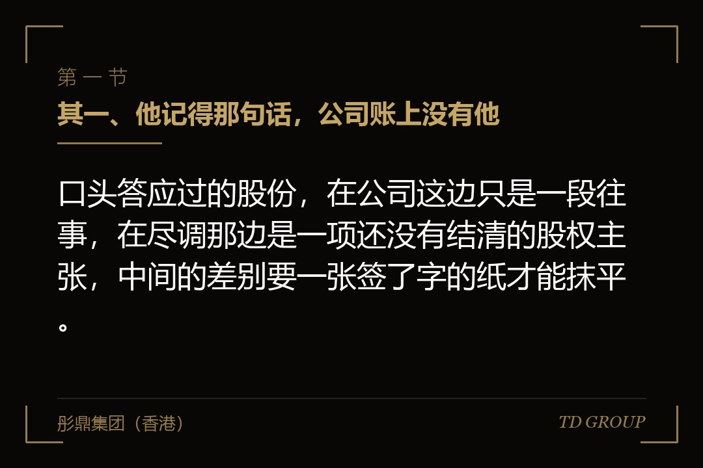
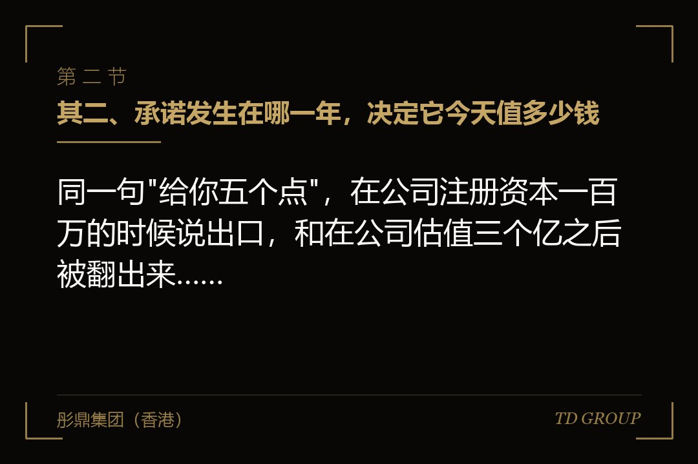
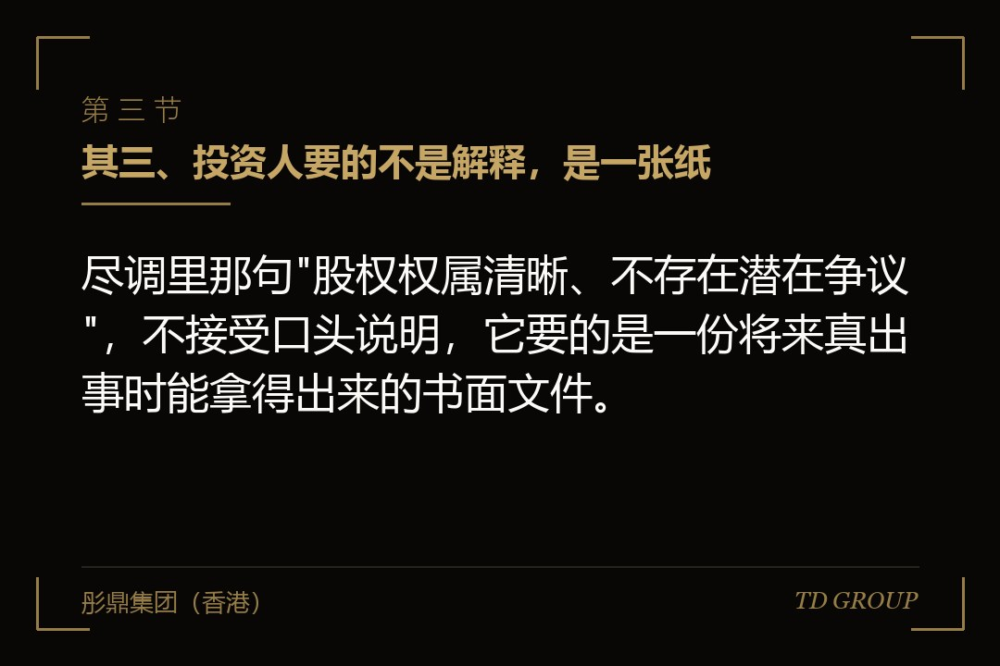

其一、他记得那句话，公司账上没有他

结论先行：口头答应过的股份，在公司这边只是一段往事，在尽调那边是一项还没有结清的股权主张，中间的差别要一张签了字的纸才能抹平。
假设有家做工业除尘设备的公司，要在今年做头一轮机构融资。八年前公司刚起步的时候，老板跟当时的技术负责人在车间外面说过一句话：这事要是成了，给你五个点。两个人都记得那句话，谁也没有写下来。那位技术负责人三年前离开了公司，走得还算体面，逢年过节还有来往。
尽调清单发过来，其中有一项是请企业确认股权权属清晰、不存在潜在争议。老板看了一眼就签了字，他觉得这是句套话——公司的股东名册上只有他和另一位合伙人，工商登记也是这两个人，账上、章程上、决议上找不到第三个名字。
问题出在中介后来补的一句追问上。对方问的不是股东名册，而是：这些年有没有任何人，在任何场合，被口头许诺过公司的股份，包括已经离职的人。老板停了几秒钟，然后说了那句"给你五个点"。这一停，尽调进度往后拖了两个多月。
后面的事听起来会有点不讲道理。那位技术负责人本人并没有来主张什么，他甚至不知道公司正在融资。真正卡住流程的是投资人那一边：他们不能把"当事人应该不会来找我们"这句话写进投资协议，他们需要的是一份能放进文件夹里的东西。
一句话变成一项主张，中间不需要对方做任何动作，它只需要被承认存在过。老板自己承认的那一刻，这件事就从"没有的事"变成了"要处理的事"，而处理它的成本，此时已经跟八年前完全不是一个数量级。
其二、承诺发生在哪一年，决定它今天值多少钱

结论先行：同一句"给你五个点"，在公司注册资本一百万的时候说出口，和在公司估值三个亿之后被翻出来，对方心里对着的是两个差了几百倍的数字。
口头承诺最麻烦的地方，是它从来没有一个价格坐标。说那句话的时候，公司一年营收两百万，账上常年紧巴巴，五个点在双方心里都是几万块钱的事，说的人觉得自己给得起，听的人也没把它当成一笔财产。
八年后融资谈到了三个亿的投前估值，五个点就是一千五百万。这个数字不是谁算出来的，是投资人一进场、估值一挂到桌面上，它自己就长出来了。而对方原本可能真的不打算追究，看到这个数字之后，不追究这件事本身就变得很难。
所以"等融资定下来再谈"是这件事上最贵的一种拖法。融资之前谈，双方谈的是当年那句话到底是什么意思；融资之后谈，双方谈的是一千五百万怎么分。前一场是讲人情，后一场是讲价钱，而讲价钱的那一场，公司这边几乎没有筹码。
有一道算术，企业主可以自己做一遍：把这些年跟人提过的股份点数加起来，乘上你现在心里的那个估值。得出来的那个数，就是你今天要谈的起点。多数老板算完会发现，这个数比他们原本预想的大一位数。
还有一层容易被忽略：点数是会自己变大的。当年说五个点的时候，公司只有两个股东；后来预留了期权、进了新股东，稀释一轮一轮发生，而对方记住的还是"五个点"这三个字，他不会自动接受一个被稀释过的版本。
其三、投资人要的不是解释，是一张纸

结论先行：尽调里那句"股权权属清晰、不存在潜在争议"，不接受口头说明，它要的是一份将来真出事时能拿得出来的书面文件。
企业主在这一关最常见的反应是解释：那是喝酒的时候说的、那人早就不干了、我们关系一直很好。这些话都可能是真的，可它们没有一句能写进交割文件。投资人要的是一个能够归档、将来能够被援引的东西，而解释不具备这个属性。
能满足这一项的出口通常有三个。走法一，请对方签一份书面确认，写明双方之间不存在尚未了结的股权约定，或者当年那件事已经了结。这是三条里成本最低的一条，前提是对方愿意签，而且是在他知道公司正在融资之前就签。
走法二，把股份真的给他。走增资或者老股转让，开股东会、改章程、办工商变更登记，让他成为登记在册的股东。这条路花钱、花时间、还要摊薄现有股东，但它把问题从"潜在争议"变成了"已经完成的事实"，之后每一轮融资都不会再被问一遍。
走法三，由创始人个人出具一份承诺：将来若有人就股份提出主张，由创始人自己承担全部后果。签字快、不摊薄、不需要去跟对方联系，所以它是被选得最多的一条。它的代价在下一节。
三条路里，走法一的窗口最短。对方一旦知道公司在融资，那份确认书就很难再签下来了——不是因为他贪，而是因为在那个时点上签字，等于放弃一个已经有了价格的东西，换成谁都会犹豫一下。
其四、创始人个人兜底，是把公司的事搬到自己身上
结论先行：让创始人个人签一份"将来有人主张股份由我承担"，看着是三条路里最快的一条，实际上是把一件公司的事，永久搬进了创始人自己的资产。
这份承诺签的是个人的名字，不是公司的章。有限责任在这里帮不上忙——公司的债由公司还，个人签下的承诺由个人还，这中间没有一道墙。很多老板签的时候没有意识到这一点，因为文件通常只有薄薄一页，标题看上去也很温和。
它多数没有金额上限，也常常没有时间上限。当年那句话涉及五个点，将来要补的就是五个点，而不是当年那五个点值的几万块钱。补的时候拿什么补，多半是创始人自己名下的股份，因为那往往是他手里最直接能拿得出来的东西。
假设有家做工业洗涤设备的公司，融资的时候就是这么处理的。创始人签了兜底承诺，那一轮顺利交割。两年后一位早期员工找上门来，拿出当年一份会议纪要，上面写着给他三个点。创始人按承诺从自己名下划了三个点出去。
那三个点划走之后，他的持股掉到了一条线以下——公司章程里有几件事需要达到一定比例的表决权才能推动，他原本刚好在线的上方，划完之后就落到了线的下方。这件事跟那三个点值多少钱没什么关系，它改变的是他在自己公司里说了算的范围。
所以兜底这条路真正的代价，不是将来可能要赔多少钱，而是把一件本可以在融资前用一顿饭解决的事，变成了一颗挂在创始人个人股份上的雷。华尔街彤鼎俱乐部里有位做过几轮融资的成员说过，兜底承诺是创始人为了赶一个交割日，向未来的自己借的一笔钱。
其五、把口头承诺变成书面，要落在三个地方
结论先行：一句承诺要真正了结，得同时落在双方之间的约定、公司内部的决议、以及对外的登记上，缺任何一处，下一轮融资还会把它翻出来重问一遍。
很多企业主以为签一份协议就完事了。协议解决的是双方之间的关系，它管得住签字的那两个人，管不住公司这个主体，也管不住工商登记那边显示出来的信息。尽调看的从来不是一份文件，是这三处对不对得上。
双方之间那一层，要写清楚三件事：当年说的是什么、现在怎么处理、处理完之后双方就此事再无其他主张。末尾那一句最容易被漏掉，而它恰恰是投资人律师会逐字去看的一句。少了它，这份协议在尽调眼里只证明了曾经有过承诺，没证明它已经结束。
公司内部那一层，是股东会或者董事会的决议。如果处理办法是真的把股份给出去，那么增资多少、原股东是否放弃按持股比例先出这笔钱的权利、章程怎么改，都要落在决议上。这些文件补起来不难，难的是它们必须有当时在册的每一位股东的签字。
对外那一层是工商变更登记。这一步做完，这个人才算真正进来了。中间这三层任何一层缺失，下一轮融资的中介都会重新把这个人的名字捞出来，问同样的问题，而那个时候你已经没有"当时不知道"这个理由可以用了。
还有一件顺手要做的事：如果决定把股份给出去，就一并把退出机制写进去。人走股留、分期成熟、回购价格怎么算，这些条款放在给股份的同一份文件里加进去，成本几乎为零；等给完了再回头补，对方没有理由答应。
其六、离职的那些人，是最容易被漏掉的一类
结论先行：还在公司的人容易被想起来，离职的那些人往往没人记得，而恰恰是他们最有理由在融资消息传出来的那一天回头找你。
企业主自查这件事的时候，靠的通常是回忆，而回忆有一个稳定的偏差：想得起来的都是现在还坐在办公室里的人。当年一起熬过来、后来因为各种原因走掉的那几位，恰恰是当年最有可能被许诺过股份的人。
更实际的做法是翻东西，不是想事情。早年的聊天记录、邮件、会议纪要、没有落地的股权草案、工资表上写着"股份补偿"字样的那几栏、甚至是早期发给员工的那份内部说明，都可能留着痕迹。这些痕迹不用你去找，尽调那边一样找得到。
假设有家做焊接机器人的公司，融资前做过一次自查，老板写下了三个名字。中介进场之后翻出一份六年前的股东会草案，上面有五个名字，多出来的两位从来没有登记过，其中一位已经出国。为了拿到那两份确认书，这一轮融资多花了三个月。
离职的人还有一个特点：他们对当年那句话的记忆，往往比留下来的人更清楚。留下来的人这些年拿了工资、拿了奖金、也许还拿了期权，那句话在他心里被覆盖过很多次；离开的人没有这些覆盖，那句话是他关于这家公司最后的一笔账。
所以自查的范围要按时间划，不要按名单划。从公司成立到现在，一年一年地问自己：这一年有谁离开，走的时候有没有留下过什么没结清的说法。这个问法比对着花名册看一遍，能捞出来的东西多得多。
其七、这件事该在什么时候做
结论先行：这件事在没有估值的时候是一句话能了的人情，有了估值之后就是一场谈判，所以它的处理时点永远该在融资正式启动之前的那几个月。
时点比办法更要紧，这是它跟大多数融资准备工作不一样的地方。财务规范、章程修订、社保补缴这些事，早做晚做都是那些钱；口头承诺不是，它的价格跟着估值一起涨，而且涨得比公司本身还快——公司涨的是估值，它涨的是估值乘以点数。
融资正式启动之前那几个月，是这件事的窗口。那个时候公司还没有对外说要融资，估值也还没有被摆到桌面上，去找当年那个人聊，聊的还是当年那件事本身。晚一步，聊的就是一个已经标好了价格的东西。
企业主可以先自己回答四句话：这些年我跟谁提过股份、有没有留下过书面痕迹、这些人现在还在不在公司、按我现在心里的估值这些点数是多少钱。四句都答得上来，这件事就已经解决了一半。
答不上来的那几个人，接下来要做的动作也是四件：把痕迹找齐、定下用哪一条走法、把双方约定与公司决议与对外登记这三层一次做完、再把退出条款一并补上。这四件事在融资之前做，是一笔可以做预算的支出；在融资之后做，是一场没有底价的谈判。
本质上，这件事考的不是企业主记不记得住，而是他愿不愿意在还没有人来找他的时候，主动把一句话变成一张纸。没有人去翻的旧账，会一直在那里等一个最贵的时点自己冒出来，而那个时点通常不由公司这边来选。华尔街彤鼎俱乐部的一位成员把这类没结清的说法叫作公司的旧账，说的就是这个意思。具体处理以公司章程约定和当时有效的法律为准。